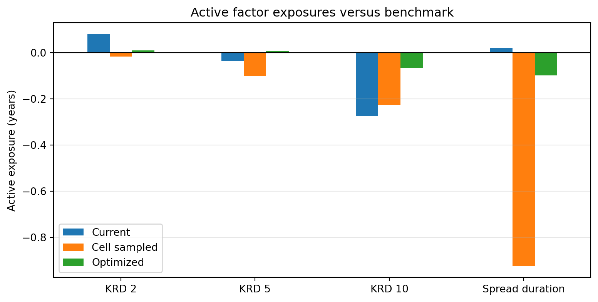

Code
import numpy as np
import pandas as pd
import matplotlib.pyplot as plt
from scipy.optimize import minimize
portfolio_value = 50_000_000
position_cap = 0.18
treasury_minimum = 0.25
corporate_cap = 0.45
duration_tolerance = 0.05From an investable universe to weights, trades, and stress tests
An investment-grade manager has $50 million to invest. The mandate is to earn more carry than a broad bond benchmark without taking an unintended duration, curve, sector, issuer, or liquidity bet. This demo turns that mandate into an auditable portfolio and an implementable trade list.
The security descriptions and market analytics are a dated, market-like teaching snapshot, not executable quotes. In practice, the same table would come from a portfolio system, evaluated pricing service, dealer runs, and reference-data checks.
| Workflow stage | In this case |
|---|---|
| Supplied | Bond terms, yields, spreads, durations, liquidity costs, benchmark and current weights |
| Constructed | A transparent cell-sampled portfolio and a constrained optimized portfolio |
| Diagnosed | Factor mismatches, tracking error, concentration, turnover, and transaction cost |
| Used for | Trade sizing, scenario P&L, and a portfolio recommendation |
The optimized portfolio must be fully invested, hold no more than 18% in one security, keep at least 25% in Treasuries, cap corporate exposure at 45%, and stay within 0.05 years of benchmark duration. These are teaching constraints; an actual mandate would also specify ratings, currencies, derivatives, cash, tax, ESG, and counterparty rules.
Yield and spread are annual percentages expressed as decimals. Duration and spread duration are in years; transaction cost is a one-way estimate in basis points of market value. KRD 2, KRD 5, and KRD 10 are simplified key-rate duration contributions per dollar invested.
universe = pd.DataFrame({
"Bond": ["UST 2Y", "UST 5Y", "UST 10Y", "Agency 3Y", "Agency 7Y",
"Bank A 3Y", "Bank B 5Y", "Utility A 7Y", "Industrial A 10Y",
"Industrial B 5Y", "Telecom A 10Y", "Consumer A 7Y"],
"Sector": ["Treasury", "Treasury", "Treasury", "Agency", "Agency",
"Corporate", "Corporate", "Corporate", "Corporate",
"Corporate", "Corporate", "Corporate"],
"Cell": ["Gov 1-4", "Gov 5-8", "Gov 9+", "Gov 1-4", "Gov 5-8",
"Corp 1-4", "Corp 5-8", "Corp 5-8", "Corp 9+",
"Corp 5-8", "Corp 9+", "Corp 5-8"],
"Yield": [0.0415, 0.0435, 0.0455, 0.0442, 0.0470, 0.0505,
0.0528, 0.0555, 0.0585, 0.0540, 0.0600, 0.0562],
"Spread (bp)": [0, 0, 0, 38, 55, 92, 112, 138, 165, 125, 182, 148],
"Duration": [1.88, 4.45, 7.85, 2.72, 5.82, 2.65, 4.35, 5.65,
7.35, 4.18, 7.10, 5.45],
"Convexity": [4.8, 23.5, 72.0, 9.0, 39.5, 8.5, 22.0, 37.0,
62.0, 20.5, 58.0, 35.0],
"Spread duration": [0, 0, 0, 2.60, 5.65, 2.55, 4.20, 5.45,
7.05, 4.02, 6.75, 5.25],
"KRD 2": [1.70, 0.35, 0.05, 2.30, 0.25, 2.20, 0.45, 0.20, 0.10, 0.50, 0.10, 0.25],
"KRD 5": [0.18, 3.75, 1.20, 0.42, 4.30, 0.45, 3.35, 3.80, 1.25, 3.10, 1.10, 3.65],
"KRD 10": [0.00, 0.35, 6.60, 0.00, 1.27, 0.00, 0.55, 1.65, 6.00, 0.58, 5.90, 1.55],
"Trading cost (bp)": [1, 2, 3, 3, 5, 6, 7, 9, 12, 8, 14, 10],
"Benchmark weight": [0.10, 0.13, 0.10, 0.09, 0.10, 0.07,
0.09, 0.08, 0.07, 0.07, 0.05, 0.05],
"Current weight": [0.12, 0.10, 0.08, 0.10, 0.08, 0.08,
0.10, 0.07, 0.05, 0.08, 0.04, 0.10],
})
assert np.isclose(universe["Benchmark weight"].sum(), 1)
assert np.isclose(universe["Current weight"].sum(), 1)
universe[["Bond", "Sector", "Cell", "Yield", "Spread (bp)", "Duration",
"Spread duration", "Trading cost (bp)", "Benchmark weight"]]| Bond | Sector | Cell | Yield | Spread (bp) | Duration | Spread duration | Trading cost (bp) | Benchmark weight | |
|---|---|---|---|---|---|---|---|---|---|
| 0 | UST 2Y | Treasury | Gov 1-4 | 0.0415 | 0 | 1.88 | 0.00 | 1 | 0.10 |
| 1 | UST 5Y | Treasury | Gov 5-8 | 0.0435 | 0 | 4.45 | 0.00 | 2 | 0.13 |
| 2 | UST 10Y | Treasury | Gov 9+ | 0.0455 | 0 | 7.85 | 0.00 | 3 | 0.10 |
| 3 | Agency 3Y | Agency | Gov 1-4 | 0.0442 | 38 | 2.72 | 2.60 | 3 | 0.09 |
| 4 | Agency 7Y | Agency | Gov 5-8 | 0.0470 | 55 | 5.82 | 5.65 | 5 | 0.10 |
| 5 | Bank A 3Y | Corporate | Corp 1-4 | 0.0505 | 92 | 2.65 | 2.55 | 6 | 0.07 |
| 6 | Bank B 5Y | Corporate | Corp 5-8 | 0.0528 | 112 | 4.35 | 4.20 | 7 | 0.09 |
| 7 | Utility A 7Y | Corporate | Corp 5-8 | 0.0555 | 138 | 5.65 | 5.45 | 9 | 0.08 |
| 8 | Industrial A 10Y | Corporate | Corp 9+ | 0.0585 | 165 | 7.35 | 7.05 | 12 | 0.07 |
| 9 | Industrial B 5Y | Corporate | Corp 5-8 | 0.0540 | 125 | 4.18 | 4.02 | 8 | 0.07 |
| 10 | Telecom A 10Y | Corporate | Corp 9+ | 0.0600 | 182 | 7.10 | 6.75 | 14 | 0.05 |
| 11 | Consumer A 7Y | Corporate | Corp 5-8 | 0.0562 | 148 | 5.45 | 5.25 | 10 | 0.05 |
For weights \(w_i\) and security exposure \(x_{ik}\), portfolio exposure to factor \(k\) is \(x_{P,k}=\sum_i w_i x_{ik}\). Dollar value of one basis point is \(DV01=V_P D_P(0.0001)\).
factor_columns = ["KRD 2", "KRD 5", "KRD 10", "Spread duration"]
def portfolio_summary(weights):
weights = np.asarray(weights)
result = {
"Yield (%)": 100 * weights @ universe["Yield"],
"Duration": weights @ universe["Duration"],
"Convexity": weights @ universe["Convexity"],
"Spread duration": weights @ universe["Spread duration"],
"Treasury weight (%)": 100 * weights[universe["Sector"].eq("Treasury")].sum(),
"Corporate weight (%)": 100 * weights[universe["Sector"].eq("Corporate")].sum(),
"Largest position (%)": 100 * weights.max(),
}
result.update({column: weights @ universe[column] for column in factor_columns[:3]})
result["DV01 ($/bp)"] = portfolio_value * result["Duration"] * 0.0001
return pd.Series(result)
benchmark_weights = universe["Benchmark weight"].to_numpy()
current_weights = universe["Current weight"].to_numpy()
portfolio_summary(benchmark_weights).round(3)Yield (%) 4.944
Duration 4.842
Convexity 31.455
Spread duration 3.166
Treasury weight (%) 33.000
Corporate weight (%) 48.000
Largest position (%) 13.000
KRD 2 0.722
KRD 5 2.272
KRD 10 1.847
DV01 ($/bp) 24209.500
dtype: float64Cell sampling first matches broad sector/maturity buckets, then chooses a representative liquid bond in each cell. It is easy to explain, but matching cell weights does not guarantee matching duration or key-rate exposure.
cell_weights = universe.groupby("Cell")["Benchmark weight"].sum()
representatives = {
"Gov 1-4": "UST 2Y", "Gov 5-8": "UST 5Y", "Gov 9+": "UST 10Y",
"Corp 1-4": "Bank A 3Y", "Corp 5-8": "Bank B 5Y", "Corp 9+": "Industrial A 10Y",
}
sampled_weights = np.zeros(len(universe))
for cell, weight in cell_weights.items():
bond_name = representatives[cell]
sampled_weights[universe.index[universe["Bond"].eq(bond_name)][0]] = weight
sampled_table = pd.DataFrame({"Benchmark": benchmark_weights,
"Cell sampled": sampled_weights}, index=universe["Bond"])
sampled_table.loc[sampled_table.sum(axis=1).gt(0)].round(3)| Benchmark | Cell sampled | |
|---|---|---|
| Bond | ||
| UST 2Y | 0.10 | 0.19 |
| UST 5Y | 0.13 | 0.23 |
| UST 10Y | 0.10 | 0.10 |
| Agency 3Y | 0.09 | 0.00 |
| Agency 7Y | 0.10 | 0.00 |
| Bank A 3Y | 0.07 | 0.07 |
| Bank B 5Y | 0.09 | 0.29 |
| Utility A 7Y | 0.08 | 0.00 |
| Industrial A 10Y | 0.07 | 0.12 |
| Industrial B 5Y | 0.07 | 0.00 |
| Telecom A 10Y | 0.05 | 0.00 |
| Consumer A 7Y | 0.05 | 0.00 |
Let \(a=w-w_B\) be active weights and \(B\) the factor-exposure matrix. A compact factor-risk approximation is
\[TE^2 \approx (B'a)'\Sigma_F(B'a)+\sum_i a_i^2\sigma_{\epsilon,i}^2.\]
The objective balances predicted tracking error, turnover, transaction cost, and a modest preference for carry:
\[\min_w\; TE^2+\lambda_T\sum_i(w_i-w_i^{current})^2 +\lambda_C\sum_i c_i|w_i-w_i^{current}|-\lambda_Y w'y.\]
This is a teaching risk model. Production construction would use a validated factor covariance matrix, specific-risk forecasts, executable costs, lot sizes, and compliance-tested constraints.
exposure_matrix = universe[factor_columns].to_numpy()
factor_vol = np.array([0.0070, 0.0080, 0.0090, 0.0060])
factor_correlation = np.array([
[1.00, 0.82, 0.62, 0.05], [0.82, 1.00, 0.85, 0.08],
[0.62, 0.85, 1.00, 0.10], [0.05, 0.08, 0.10, 1.00],
])
factor_covariance = np.outer(factor_vol, factor_vol) * factor_correlation
specific_vol = np.where(universe["Sector"].eq("Corporate"), 0.010, 0.003)
cost_rate = universe["Trading cost (bp)"].to_numpy() / 10_000
benchmark_duration = benchmark_weights @ universe["Duration"]
def tracking_variance(weights):
active = weights - benchmark_weights
active_factors = active @ exposure_matrix
return active_factors @ factor_covariance @ active_factors + np.sum((active * specific_vol) ** 2)
def objective(weights):
turnover_penalty = 0.002 * np.sum((weights - current_weights) ** 2)
transaction_cost = 0.20 * np.sum(cost_rate * np.abs(weights - current_weights))
carry_reward = 0.0015 * weights @ universe["Yield"]
return tracking_variance(weights) + turnover_penalty + transaction_cost - carry_rewardtreasury_mask = universe["Sector"].eq("Treasury").to_numpy()
corporate_mask = universe["Sector"].eq("Corporate").to_numpy()
constraints = [
{"type": "eq", "fun": lambda w: w.sum() - 1},
{"type": "ineq", "fun": lambda w: w[treasury_mask].sum() - treasury_minimum},
{"type": "ineq", "fun": lambda w: corporate_cap - w[corporate_mask].sum()},
{"type": "ineq", "fun": lambda w: duration_tolerance -
abs(w @ universe["Duration"].to_numpy() - benchmark_duration)},
]
solution = minimize(objective, current_weights, method="SLSQP",
bounds=[(0, position_cap)] * len(universe), constraints=constraints,
options={"ftol": 1e-12, "maxiter": 2_000})
assert solution.success, solution.message
optimized_weights = solution.xportfolios = {"Benchmark": benchmark_weights, "Current": current_weights,
"Cell sampled": sampled_weights, "Optimized": optimized_weights}
comparison = pd.DataFrame({name: portfolio_summary(weights)
for name, weights in portfolios.items()}).T
comparison["Ex ante tracking error (%)"] = [
100 * np.sqrt(tracking_variance(weights)) for weights in portfolios.values()]
comparison["Turnover (%)"] = [
100 * np.abs(weights - current_weights).sum() / 2 for weights in portfolios.values()]
comparison["Estimated trading cost ($)"] = [
portfolio_value * np.sum(cost_rate * np.abs(weights - current_weights))
for weights in portfolios.values()]
comparison.round(3)| Yield (%) | Duration | Convexity | Spread duration | Treasury weight (%) | Corporate weight (%) | Largest position (%) | KRD 2 | KRD 5 | KRD 10 | DV01 ($/bp) | Ex ante tracking error (%) | Turnover (%) | Estimated trading cost ($) | |
|---|---|---|---|---|---|---|---|---|---|---|---|---|---|---|
| Benchmark | 4.944 | 4.842 | 31.455 | 3.166 | 33.000 | 48.0 | 13.000 | 0.722 | 2.272 | 1.847 | 24209.5 | 0.000 | 11.0 | 7250.000 |
| Current | 4.962 | 4.610 | 28.776 | 3.187 | 30.000 | 52.0 | 12.000 | 0.802 | 2.235 | 1.572 | 23048.0 | 0.247 | 0.0 | 0.000 |
| Cell sampled | 4.831 | 4.495 | 27.932 | 2.242 | 52.000 | 48.0 | 29.000 | 0.705 | 2.170 | 1.620 | 22473.5 | 0.694 | 48.0 | 30750.000 |
| Optimized | 4.915 | 4.792 | 31.024 | 3.068 | 34.805 | 45.0 | 12.416 | 0.732 | 2.278 | 1.781 | 23959.5 | 0.104 | 7.0 | 3462.414 |
active_exposures = pd.DataFrame({
name: (weights - benchmark_weights) @ exposure_matrix
for name, weights in portfolios.items() if name != "Benchmark"
}, index=factor_columns)
ax = active_exposures.plot(kind="bar", figsize=(8.2, 4.2))
ax.axhline(0, color="black", linewidth=0.8)
ax.set(ylabel="Active exposure (years)", title="Active factor exposures versus benchmark")
ax.grid(axis="y", alpha=0.3)
plt.xticks(rotation=0)
plt.tight_layout()
plt.show()
Trades below are dollar market values. A real order list would convert market value to face amount using clean price, accrued interest, minimum denominations, round lots, and available dealer inventory.
trade_list = universe[["Bond", "Sector", "Cell"]].copy()
trade_list["Current weight (%)"] = 100 * current_weights
trade_list["Target weight (%)"] = 100 * optimized_weights
trade_list["Trade ($mm)"] = portfolio_value * (optimized_weights - current_weights) / 1_000_000
trade_list["Estimated cost ($)"] = portfolio_value * np.abs(optimized_weights - current_weights) * cost_rate
trade_list.loc[trade_list["Trade ($mm)"].abs().gt(0.025)].round(3)| Bond | Sector | Cell | Current weight (%) | Target weight (%) | Trade ($mm) | Estimated cost ($) | |
|---|---|---|---|---|---|---|---|
| 0 | UST 2Y | Treasury | Gov 1-4 | 12.0 | 12.416 | 0.208 | 20.778 |
| 1 | UST 5Y | Treasury | Gov 5-8 | 10.0 | 11.360 | 0.680 | 136.018 |
| 2 | UST 10Y | Treasury | Gov 9+ | 8.0 | 11.029 | 1.515 | 454.369 |
| 3 | Agency 3Y | Agency | Gov 1-4 | 10.0 | 10.380 | 0.190 | 57.047 |
| 4 | Agency 7Y | Agency | Gov 5-8 | 8.0 | 9.815 | 0.907 | 453.707 |
| 5 | Bank A 3Y | Corporate | Corp 1-4 | 8.0 | 4.341 | -1.830 | 1097.806 |
| 6 | Bank B 5Y | Corporate | Corp 5-8 | 10.0 | 8.128 | -0.936 | 655.032 |
| 9 | Industrial B 5Y | Corporate | Corp 5-8 | 8.0 | 6.531 | -0.735 | 587.629 |
For Treasury yield shift \(\Delta y_i\) and spread change \(\Delta s_i\),
\[\frac{\Delta P_i}{P_i}\approx-D_i\Delta y_i-SD_i\Delta s_i +\frac12 C_i(\Delta y_i)^2.\]
scenarios = {
"Parallel rates +50 bp": {"short": 50, "intermediate": 50, "long": 50, "spread": 0},
"Bear steepener": {"short": 20, "intermediate": 45, "long": 80, "spread": 15},
"Bull flattener": {"short": -20, "intermediate": -55, "long": -90, "spread": -10},
"Credit selloff": {"short": 0, "intermediate": 0, "long": 0, "spread": 100},
}
def scenario_return(weights, scenario):
rate_shock = np.where(universe["Duration"].lt(3.5), scenario["short"],
np.where(universe["Duration"].lt(6.5), scenario["intermediate"], scenario["long"])) / 10_000
spread_shock = np.where(universe["Sector"].eq("Corporate"), scenario["spread"],
np.where(universe["Sector"].eq("Agency"), scenario["spread"] * 0.25, 0)) / 10_000
security_return = (-universe["Duration"].to_numpy() * rate_shock
- universe["Spread duration"].to_numpy() * spread_shock
+ 0.5 * universe["Convexity"].to_numpy() * rate_shock**2)
return weights @ security_return
scenario_results = pd.DataFrame({
name: {scenario_name: portfolio_value * scenario_return(weights, shock) / 1_000_000
for scenario_name, shock in scenarios.items()}
for name, weights in portfolios.items()})
scenario_results.index.name = "Scenario P&L ($mm)"
scenario_results.round(3)| Benchmark | Current | Cell sampled | Optimized | |
|---|---|---|---|---|
| Scenario P&L ($mm) | ||||
| Parallel rates +50 bp | -1.191 | -1.134 | -1.106 | -1.179 |
| Bear steepener | -1.463 | -1.345 | -1.374 | -1.419 |
| Bull flattener | 1.682 | 1.535 | 1.584 | 1.635 |
| Credit selloff | -1.284 | -1.326 | -1.121 | -1.225 |
The table above is the static PDF fallback. In HTML, change the parallel Treasury-rate and corporate-spread shocks to stress the optimized portfolio.
optimized_summary = portfolio_summary(optimized_weights)
assert np.isclose(optimized_weights.sum(), 1, atol=1e-8)
assert optimized_weights.min() >= -1e-9
assert optimized_weights.max() <= position_cap + 1e-8
assert optimized_weights[treasury_mask].sum() >= treasury_minimum - 1e-8
assert optimized_weights[corporate_mask].sum() <= corporate_cap + 1e-8
assert abs(optimized_summary["Duration"] - benchmark_duration) <= duration_tolerance + 1e-8
assert np.isfinite(comparison.to_numpy()).all()
print(f"Optimization converged: {solution.success}")
pd.Series({
"Weights sum to": optimized_weights.sum(),
"Duration difference vs benchmark": optimized_summary["Duration"] - benchmark_duration,
"Treasury minimum slack": optimized_weights[treasury_mask].sum() - treasury_minimum,
"Corporate cap slack": corporate_cap - optimized_weights[corporate_mask].sum(),
"Position-cap slack": position_cap - optimized_weights.max(),
}).round(6)Optimization converged: TrueWeights sum to 1.0000
Duration difference vs benchmark -0.0500
Treasury minimum slack 0.0980
Corporate cap slack 0.0000
Position-cap slack 0.0558
dtype: float64The optimizer is a disciplined starting point, not an automatic trade instruction. The manager should prefer it to the cell sample only if its incremental carry and factor control survive executable-price checks, lot rounding, issuer review, and scenario analysis. Rebalance when the benefit of restoring the mandate exceeds transaction costs and operational complexity.
Replace the embedded universe with a permitted bond inventory or evaluated-price snapshot. Add clean price and accrued interest, convert target market values to face amounts, impose issuer-level limits, and compare predicted tracking error with realized active returns over the next month.
---
title: "Practical Demo: Constructing a Benchmark-Aware Bond Portfolio"
subtitle: "From an investable universe to weights, trades, and stress tests"
format:
html:
toc: true
number-sections: true
code-fold: true
code-tools: true
jupyter: python3
execute:
echo: true
warning: false
message: false
---
## Goal and Decision {.unnumbered}
An investment-grade manager has **$50 million** to invest. The mandate is to earn
more carry than a broad bond benchmark without taking an unintended duration,
curve, sector, issuer, or liquidity bet. This demo turns that mandate into an
auditable portfolio and an implementable trade list.
The security descriptions and market analytics are a **dated, market-like teaching
snapshot**, not executable quotes. In practice, the same table would come from a
portfolio system, evaluated pricing service, dealer runs, and reference-data checks.
| Workflow stage | In this case |
|---|---|
| Supplied | Bond terms, yields, spreads, durations, liquidity costs, benchmark and current weights |
| Constructed | A transparent cell-sampled portfolio and a constrained optimized portfolio |
| Diagnosed | Factor mismatches, tracking error, concentration, turnover, and transaction cost |
| Used for | Trade sizing, scenario P&L, and a portfolio recommendation |
## 1. Define the Mandate
The optimized portfolio must be fully invested, hold no more than 18% in one
security, keep at least 25% in Treasuries, cap corporate exposure at 45%, and
stay within 0.05 years of benchmark duration. These are teaching constraints;
an actual mandate would also specify ratings, currencies, derivatives, cash,
tax, ESG, and counterparty rules.
```{python}
#| label: setup
import numpy as np
import pandas as pd
import matplotlib.pyplot as plt
from scipy.optimize import minimize
portfolio_value = 50_000_000
position_cap = 0.18
treasury_minimum = 0.25
corporate_cap = 0.45
duration_tolerance = 0.05
```
## 2. Assemble the Investable Universe
Yield and spread are annual percentages expressed as decimals. Duration and
spread duration are in years; transaction cost is a one-way estimate in basis
points of market value. `KRD 2`, `KRD 5`, and `KRD 10` are simplified key-rate
duration contributions per dollar invested.
```{python}
#| label: bond-universe
universe = pd.DataFrame({
"Bond": ["UST 2Y", "UST 5Y", "UST 10Y", "Agency 3Y", "Agency 7Y",
"Bank A 3Y", "Bank B 5Y", "Utility A 7Y", "Industrial A 10Y",
"Industrial B 5Y", "Telecom A 10Y", "Consumer A 7Y"],
"Sector": ["Treasury", "Treasury", "Treasury", "Agency", "Agency",
"Corporate", "Corporate", "Corporate", "Corporate",
"Corporate", "Corporate", "Corporate"],
"Cell": ["Gov 1-4", "Gov 5-8", "Gov 9+", "Gov 1-4", "Gov 5-8",
"Corp 1-4", "Corp 5-8", "Corp 5-8", "Corp 9+",
"Corp 5-8", "Corp 9+", "Corp 5-8"],
"Yield": [0.0415, 0.0435, 0.0455, 0.0442, 0.0470, 0.0505,
0.0528, 0.0555, 0.0585, 0.0540, 0.0600, 0.0562],
"Spread (bp)": [0, 0, 0, 38, 55, 92, 112, 138, 165, 125, 182, 148],
"Duration": [1.88, 4.45, 7.85, 2.72, 5.82, 2.65, 4.35, 5.65,
7.35, 4.18, 7.10, 5.45],
"Convexity": [4.8, 23.5, 72.0, 9.0, 39.5, 8.5, 22.0, 37.0,
62.0, 20.5, 58.0, 35.0],
"Spread duration": [0, 0, 0, 2.60, 5.65, 2.55, 4.20, 5.45,
7.05, 4.02, 6.75, 5.25],
"KRD 2": [1.70, 0.35, 0.05, 2.30, 0.25, 2.20, 0.45, 0.20, 0.10, 0.50, 0.10, 0.25],
"KRD 5": [0.18, 3.75, 1.20, 0.42, 4.30, 0.45, 3.35, 3.80, 1.25, 3.10, 1.10, 3.65],
"KRD 10": [0.00, 0.35, 6.60, 0.00, 1.27, 0.00, 0.55, 1.65, 6.00, 0.58, 5.90, 1.55],
"Trading cost (bp)": [1, 2, 3, 3, 5, 6, 7, 9, 12, 8, 14, 10],
"Benchmark weight": [0.10, 0.13, 0.10, 0.09, 0.10, 0.07,
0.09, 0.08, 0.07, 0.07, 0.05, 0.05],
"Current weight": [0.12, 0.10, 0.08, 0.10, 0.08, 0.08,
0.10, 0.07, 0.05, 0.08, 0.04, 0.10],
})
assert np.isclose(universe["Benchmark weight"].sum(), 1)
assert np.isclose(universe["Current weight"].sum(), 1)
universe[["Bond", "Sector", "Cell", "Yield", "Spread (bp)", "Duration",
"Spread duration", "Trading cost (bp)", "Benchmark weight"]]
```
## 3. Translate Holdings into Portfolio Exposures
For weights $w_i$ and security exposure $x_{ik}$, portfolio exposure to factor
$k$ is $x_{P,k}=\sum_i w_i x_{ik}$. Dollar value of one basis point is
$DV01=V_P D_P(0.0001)$.
```{python}
#| label: portfolio-summary-functions
factor_columns = ["KRD 2", "KRD 5", "KRD 10", "Spread duration"]
def portfolio_summary(weights):
weights = np.asarray(weights)
result = {
"Yield (%)": 100 * weights @ universe["Yield"],
"Duration": weights @ universe["Duration"],
"Convexity": weights @ universe["Convexity"],
"Spread duration": weights @ universe["Spread duration"],
"Treasury weight (%)": 100 * weights[universe["Sector"].eq("Treasury")].sum(),
"Corporate weight (%)": 100 * weights[universe["Sector"].eq("Corporate")].sum(),
"Largest position (%)": 100 * weights.max(),
}
result.update({column: weights @ universe[column] for column in factor_columns[:3]})
result["DV01 ($/bp)"] = portfolio_value * result["Duration"] * 0.0001
return pd.Series(result)
benchmark_weights = universe["Benchmark weight"].to_numpy()
current_weights = universe["Current weight"].to_numpy()
portfolio_summary(benchmark_weights).round(3)
```
## 4. Build a Transparent Cell-Sampled Portfolio
Cell sampling first matches broad sector/maturity buckets, then chooses a
representative liquid bond in each cell. It is easy to explain, but matching
cell weights does not guarantee matching duration or key-rate exposure.
```{python}
#| label: cell-sampling
cell_weights = universe.groupby("Cell")["Benchmark weight"].sum()
representatives = {
"Gov 1-4": "UST 2Y", "Gov 5-8": "UST 5Y", "Gov 9+": "UST 10Y",
"Corp 1-4": "Bank A 3Y", "Corp 5-8": "Bank B 5Y", "Corp 9+": "Industrial A 10Y",
}
sampled_weights = np.zeros(len(universe))
for cell, weight in cell_weights.items():
bond_name = representatives[cell]
sampled_weights[universe.index[universe["Bond"].eq(bond_name)][0]] = weight
sampled_table = pd.DataFrame({"Benchmark": benchmark_weights,
"Cell sampled": sampled_weights}, index=universe["Bond"])
sampled_table.loc[sampled_table.sum(axis=1).gt(0)].round(3)
```
## 5. Construct a Constrained Active Portfolio
Let $a=w-w_B$ be active weights and $B$ the factor-exposure matrix. A compact
factor-risk approximation is
$$TE^2 \approx (B'a)'\Sigma_F(B'a)+\sum_i a_i^2\sigma_{\epsilon,i}^2.$$
The objective balances predicted tracking error, turnover, transaction cost,
and a modest preference for carry:
$$\min_w\; TE^2+\lambda_T\sum_i(w_i-w_i^{current})^2
+\lambda_C\sum_i c_i|w_i-w_i^{current}|-\lambda_Y w'y.$$
This is a teaching risk model. Production construction would use a validated
factor covariance matrix, specific-risk forecasts, executable costs, lot sizes,
and compliance-tested constraints.
```{python}
#| label: optimization-inputs
exposure_matrix = universe[factor_columns].to_numpy()
factor_vol = np.array([0.0070, 0.0080, 0.0090, 0.0060])
factor_correlation = np.array([
[1.00, 0.82, 0.62, 0.05], [0.82, 1.00, 0.85, 0.08],
[0.62, 0.85, 1.00, 0.10], [0.05, 0.08, 0.10, 1.00],
])
factor_covariance = np.outer(factor_vol, factor_vol) * factor_correlation
specific_vol = np.where(universe["Sector"].eq("Corporate"), 0.010, 0.003)
cost_rate = universe["Trading cost (bp)"].to_numpy() / 10_000
benchmark_duration = benchmark_weights @ universe["Duration"]
def tracking_variance(weights):
active = weights - benchmark_weights
active_factors = active @ exposure_matrix
return active_factors @ factor_covariance @ active_factors + np.sum((active * specific_vol) ** 2)
def objective(weights):
turnover_penalty = 0.002 * np.sum((weights - current_weights) ** 2)
transaction_cost = 0.20 * np.sum(cost_rate * np.abs(weights - current_weights))
carry_reward = 0.0015 * weights @ universe["Yield"]
return tracking_variance(weights) + turnover_penalty + transaction_cost - carry_reward
```
```{python}
#| label: optimize-portfolio
treasury_mask = universe["Sector"].eq("Treasury").to_numpy()
corporate_mask = universe["Sector"].eq("Corporate").to_numpy()
constraints = [
{"type": "eq", "fun": lambda w: w.sum() - 1},
{"type": "ineq", "fun": lambda w: w[treasury_mask].sum() - treasury_minimum},
{"type": "ineq", "fun": lambda w: corporate_cap - w[corporate_mask].sum()},
{"type": "ineq", "fun": lambda w: duration_tolerance -
abs(w @ universe["Duration"].to_numpy() - benchmark_duration)},
]
solution = minimize(objective, current_weights, method="SLSQP",
bounds=[(0, position_cap)] * len(universe), constraints=constraints,
options={"ftol": 1e-12, "maxiter": 2_000})
assert solution.success, solution.message
optimized_weights = solution.x
```
## 6. Compare the Alternatives
```{python}
#| label: portfolio-comparison
portfolios = {"Benchmark": benchmark_weights, "Current": current_weights,
"Cell sampled": sampled_weights, "Optimized": optimized_weights}
comparison = pd.DataFrame({name: portfolio_summary(weights)
for name, weights in portfolios.items()}).T
comparison["Ex ante tracking error (%)"] = [
100 * np.sqrt(tracking_variance(weights)) for weights in portfolios.values()]
comparison["Turnover (%)"] = [
100 * np.abs(weights - current_weights).sum() / 2 for weights in portfolios.values()]
comparison["Estimated trading cost ($)"] = [
portfolio_value * np.sum(cost_rate * np.abs(weights - current_weights))
for weights in portfolios.values()]
comparison.round(3)
```
```{python}
#| label: fig-active-exposures
#| fig-cap: "Optimization controls factor mismatches that cell weights alone can conceal"
active_exposures = pd.DataFrame({
name: (weights - benchmark_weights) @ exposure_matrix
for name, weights in portfolios.items() if name != "Benchmark"
}, index=factor_columns)
ax = active_exposures.plot(kind="bar", figsize=(8.2, 4.2))
ax.axhline(0, color="black", linewidth=0.8)
ax.set(ylabel="Active exposure (years)", title="Active factor exposures versus benchmark")
ax.grid(axis="y", alpha=0.3)
plt.xticks(rotation=0)
plt.tight_layout()
plt.show()
```
## 7. Turn Weights into Trades
Trades below are dollar market values. A real order list would convert market
value to face amount using clean price, accrued interest, minimum denominations,
round lots, and available dealer inventory.
```{python}
#| label: trade-list
trade_list = universe[["Bond", "Sector", "Cell"]].copy()
trade_list["Current weight (%)"] = 100 * current_weights
trade_list["Target weight (%)"] = 100 * optimized_weights
trade_list["Trade ($mm)"] = portfolio_value * (optimized_weights - current_weights) / 1_000_000
trade_list["Estimated cost ($)"] = portfolio_value * np.abs(optimized_weights - current_weights) * cost_rate
trade_list.loc[trade_list["Trade ($mm)"].abs().gt(0.025)].round(3)
```
## 8. Stress-Test the Decision
For Treasury yield shift $\Delta y_i$ and spread change $\Delta s_i$,
$$\frac{\Delta P_i}{P_i}\approx-D_i\Delta y_i-SD_i\Delta s_i
+\frac12 C_i(\Delta y_i)^2.$$
```{python}
#| label: stress-tests
scenarios = {
"Parallel rates +50 bp": {"short": 50, "intermediate": 50, "long": 50, "spread": 0},
"Bear steepener": {"short": 20, "intermediate": 45, "long": 80, "spread": 15},
"Bull flattener": {"short": -20, "intermediate": -55, "long": -90, "spread": -10},
"Credit selloff": {"short": 0, "intermediate": 0, "long": 0, "spread": 100},
}
def scenario_return(weights, scenario):
rate_shock = np.where(universe["Duration"].lt(3.5), scenario["short"],
np.where(universe["Duration"].lt(6.5), scenario["intermediate"], scenario["long"])) / 10_000
spread_shock = np.where(universe["Sector"].eq("Corporate"), scenario["spread"],
np.where(universe["Sector"].eq("Agency"), scenario["spread"] * 0.25, 0)) / 10_000
security_return = (-universe["Duration"].to_numpy() * rate_shock
- universe["Spread duration"].to_numpy() * spread_shock
+ 0.5 * universe["Convexity"].to_numpy() * rate_shock**2)
return weights @ security_return
scenario_results = pd.DataFrame({
name: {scenario_name: portfolio_value * scenario_return(weights, shock) / 1_000_000
for scenario_name, shock in scenarios.items()}
for name, weights in portfolios.items()})
scenario_results.index.name = "Scenario P&L ($mm)"
scenario_results.round(3)
```
### Explore rate and spread shocks (HTML)
The table above is the static PDF fallback. In HTML, change the parallel
Treasury-rate and corporate-spread shocks to stress the optimized portfolio.
::: {.content-visible when-format="html"}
<div id="construction-explorer" style="padding:1rem;border:1px solid #d9e1e8;border-radius:.4rem">
<label><strong>Treasury-rate shock:</strong> <output id="rate-label">+50 bp</output></label><br>
<input id="rate-shock" type="range" min="-150" max="150" step="5" value="50" style="width:70%"><br>
<label><strong>Corporate-spread shock:</strong> <output id="spread-label">+25 bp</output></label><br>
<input id="spread-shock" type="range" min="-50" max="200" step="5" value="25" style="width:70%">
<p id="construction-result" aria-live="polite"></p>
</div>
<script>
(() => {
const rate = document.getElementById('rate-shock'), spread = document.getElementById('spread-shock');
const rateLabel = document.getElementById('rate-label'), spreadLabel = document.getElementById('spread-label');
const result = document.getElementById('construction-result');
const duration = `{python} float(optimized_weights @ universe["Duration"])`;
const convexity = `{python} float(optimized_weights @ universe["Convexity"])`;
const spreadDuration = `{python} float(optimized_weights @ universe["Spread duration"])`;
const corporateWeight = `{python} float(100 * optimized_weights[corporate_mask].sum())`;
const value = 50000000, signed = x => `${x > 0 ? '+' : ''}${x} bp`;
const update = () => {
const r = Number(rate.value), s = Number(spread.value), dy = r / 10000, ds = s / 10000;
const pct = -duration * dy + 0.5 * convexity * dy * dy - spreadDuration * ds;
rateLabel.value = signed(r); spreadLabel.value = signed(s);
result.textContent = `Approximate optimized-portfolio P&L: $${(value * pct / 1e6).toFixed(3)} million (${(100 * pct).toFixed(2)}%). ` +
`Spread duration reflects the portfolio's ${corporateWeight.toFixed(1)}% corporate allocation.`;
};
rate.addEventListener('input', update); spread.addEventListener('input', update); update();
})();
</script>
:::
## 9. Validation and Recommendation
```{python}
#| label: validation
optimized_summary = portfolio_summary(optimized_weights)
assert np.isclose(optimized_weights.sum(), 1, atol=1e-8)
assert optimized_weights.min() >= -1e-9
assert optimized_weights.max() <= position_cap + 1e-8
assert optimized_weights[treasury_mask].sum() >= treasury_minimum - 1e-8
assert optimized_weights[corporate_mask].sum() <= corporate_cap + 1e-8
assert abs(optimized_summary["Duration"] - benchmark_duration) <= duration_tolerance + 1e-8
assert np.isfinite(comparison.to_numpy()).all()
print(f"Optimization converged: {solution.success}")
pd.Series({
"Weights sum to": optimized_weights.sum(),
"Duration difference vs benchmark": optimized_summary["Duration"] - benchmark_duration,
"Treasury minimum slack": optimized_weights[treasury_mask].sum() - treasury_minimum,
"Corporate cap slack": corporate_cap - optimized_weights[corporate_mask].sum(),
"Position-cap slack": position_cap - optimized_weights.max(),
}).round(6)
```
The optimizer is a disciplined starting point, not an automatic trade instruction.
The manager should prefer it to the cell sample only if its incremental carry and
factor control survive executable-price checks, lot rounding, issuer review, and
scenario analysis. Rebalance when the benefit of restoring the mandate exceeds
transaction costs and operational complexity.
## Instructor Extension
Replace the embedded universe with a permitted bond inventory or evaluated-price
snapshot. Add clean price and accrued interest, convert target market values to
face amounts, impose issuer-level limits, and compare predicted tracking error
with realized active returns over the next month.